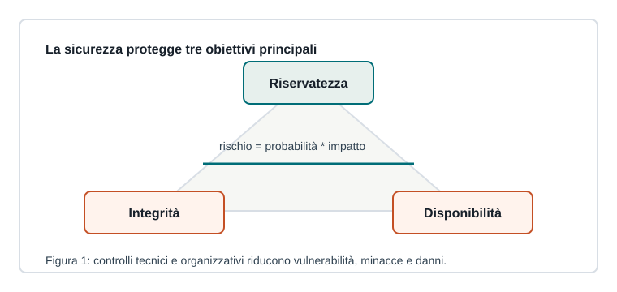

Capitoletto 5.1
Sicurezza e controllo degli accessi
La sicurezza non è un prodotto singolo: è un insieme di scelte tecniche e organizzative per ridurre il rischio.

Rischio, minaccia e vulnerabilità
Una minaccia è una possibile causa di danno; una vulnerabilità è una debolezza sfruttabile; il rischio dipende dalla probabilità che accada un evento e dall'impatto che avrebbe.
Proteggere una rete significa ridurre vulnerabilità, limitare l'esposizione e prepararsi a reagire.
CIA: tre obiettivi
| Obiettivo | Significato | Esempio |
|---|---|---|
| Riservatezza | solo utenti autorizzati leggono i dati | cifratura e permessi |
| Integrità | i dati non vengono alterati indebitamente | hash e firme |
| Disponibilità | servizi accessibili quando servono | backup e ridondanza |
Autenticazione e autorizzazione
L'autenticazione verifica l'identità, ad esempio con password, token o certificati. L'autorizzazione decide che cosa un utente autenticato può fare.
Il privilegio minimo assegna solo i permessi necessari al compito, riducendo il danno in caso di errore o compromissione.
Logging e responsabilità
I log permettono di ricostruire accessi, modifiche e anomalie. Devono essere protetti, leggibili e conservati per un tempo adeguato alle esigenze dell'organizzazione.
Ripasso
Che differenza c'è tra autenticazione e autorizzazione?
L'autenticazione dice chi sei; l'autorizzazione dice che cosa puoi fare.
Perché il privilegio minimo è importante?
Per limitare errori, abusi e conseguenze di un account compromesso.